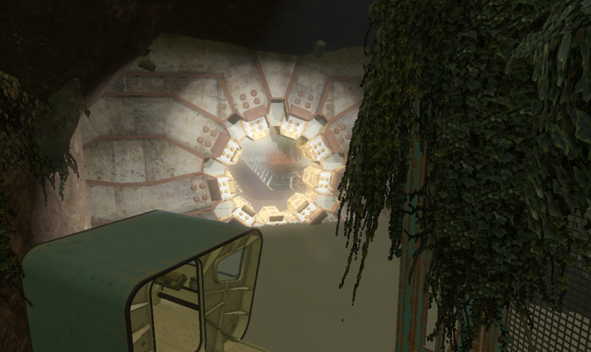
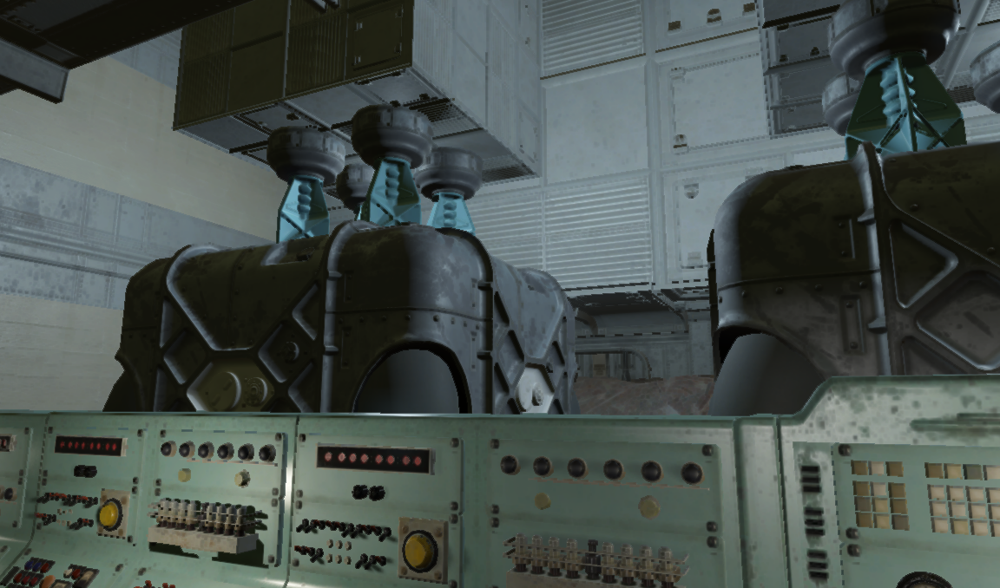
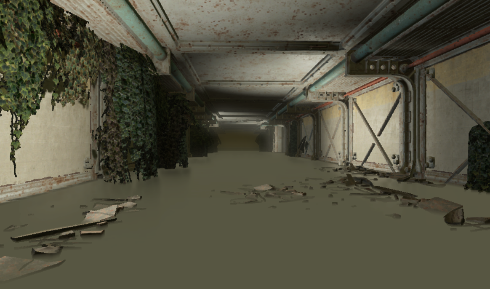
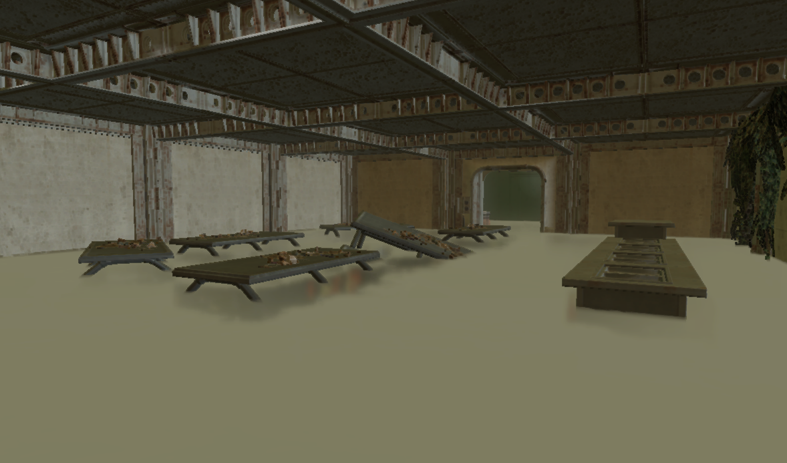

My Fallout Modding
Note: I am no longer actively working on any Fallout mods, but I am proud of the work and progress made during development.
Introduction
My journey in Fallout modding was dedicated to expanding the Fallout universe through immersive storytelling, new mechanics, and environmental design. Projects like Fallout: Wastelands and Fallout: Music City were aimed at delivering fresh, engaging experiences for fans of the series. Although I am no longer developing these mods, they reflect my growth and passion as a game developer.

Problem Statement
Creating expansive, lore-friendly content for Fallout presented challenges in balancing gameplay mechanics with narrative depth. Crafting new environments, factions, and survival systems required extensive knowledge of the Creation Engine and a commitment to storytelling authenticity.
Design & Development
These projects were developed using Bethesda's Creation Kit, with scripting in Papyrus and 3D asset creation in Blender. Level design and narrative integration were major focuses, ensuring each mod blended seamlessly with the existing Fallout universe.

Key Features
Expansive World-Building
Designed new regions with unique quests, environments, and factions to enrich the Fallout experience.
Enhanced Survival Mechanics
Implemented custom survival elements, offering players deeper challenges and resource management systems.
Story-Driven Exploration
Focused on narrative-driven content with meaningful choices that impact the game's world.
Final Result
Though development has ended, my work on Fallout mods contributed to my growth in game design and storytelling. These projects helped refine my technical skills and creative direction, forming a solid foundation for future game development endeavors.

Project Image Gallery






